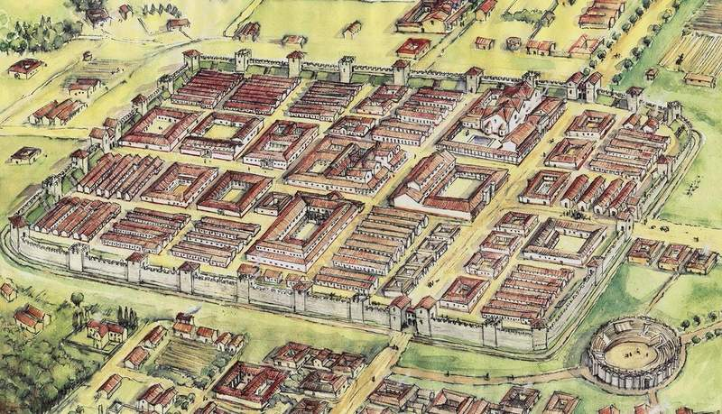
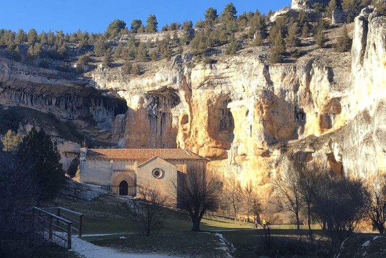
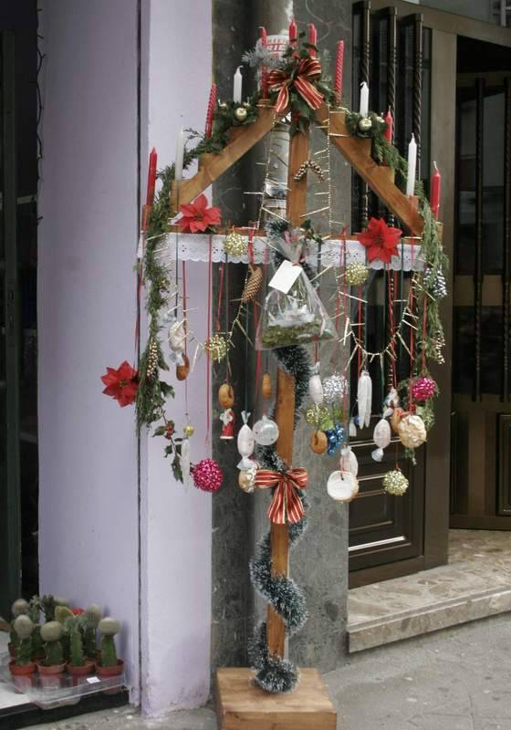
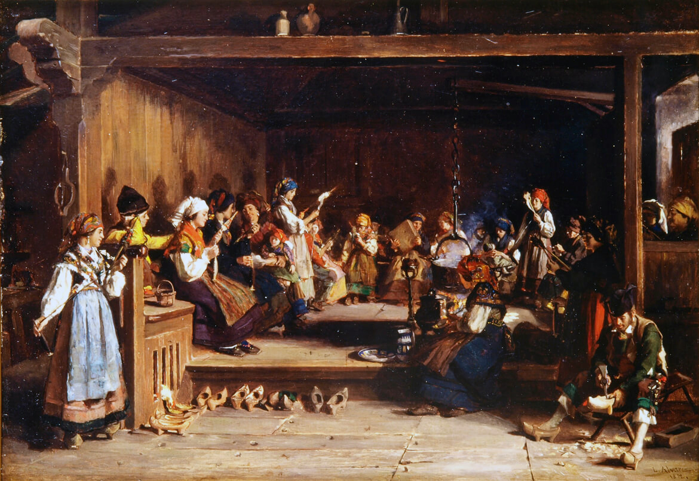

LEÓN
LOCALIZACIÓN

Fuente: Wikipedia: León
LOCALIDADES PRINCIPALES
- León
- Ponferrada
- San Andrés del Rabanedo
- Villaquilambre
- Astorga
- La Bañeza
- Bembibre
- Villablino
- Valverde de la Virgen
- Valencia de Don Juan
Fuente: Pinterest
GEOGRAFÍA
El territorio de la provincia de León no constituye una unidad homogénea sino que se pueden diferenciar tres grandes unidades geológicas: al norte, coincidiendo con la unidad morfológica de la cordillera Cantábrica, aflora el zócalo paleozoico, al oeste se encuentra la depresión del Bierzo y el conjunto constituyente del macizo Galaico-Leonés, y el resto del territorio lo constituye la cuenca sedimentaria que ocupa la mayor parte de la comunidad autónoma y en la que se distinguen dos tipos de roquedo, los materiales del viejo zócalo del Primario y los materiales sedimentarios depositados durante el Terciario y el Cuaternario en el centro de la misma.
Desde el punto de vista estructural, el relieve de la provincia se organiza en torno a tres grandes unidades morfológicas: la cordillera Cantábrica, el macizo Galaico-Leonés y la Meseta. Las formaciones montañosas ocupan una parte importante del relieve, estando más del 50 % de la superficie total por encima de los 1000 metros de altitud.
HISTORIA
Las primeras evidencias del ser humano y sus actividades en la provincia de León pertenecen al Paleolítico Inferior pero su estudio es complejo debido a la escasa información, piezas en general aisladas y la existencia de varias zonas todavía sin estudiar. La mayoría de los yacimientos se encuentran al aire libre, en las terrazas de los ríos, por lo que su contexto se ha perdido y tan sólo han llegado como vestigios los instrumentos de piedra que utilizaban. Su distribución señala que los yacimientos conocidos se extienden por las zonas llanas de la provincia mientras que faltan en la orla montañosa. Los lugares de mayor concentración de los mismos son el Bernesga-Órbigo, el Esla-Órbigo y el Bernesga-Torío, en los alrededores de León.
La mayoría de las piezas líticas encontradas están hechas sobre cuarcita procedente de los guijarros de los ríos y unas pocas sobre cuarzo y arenisca. Entre los instrumentos más frecuentes están los bifaces, caracterizándose por su sencillez, conservando parte de su superficie externa, o su espesura, predominando la forma amigdaloide. Otras piezas son hendedores, cantos trabajados y triedros. Las realizadas sobre lasca representan un porcentaje muy pequeño respecto al conjunto de útiles hallados y entre ellas sobresalen las raederas. Todos ellos fueron elaborados mediante la talla por percusión con percutores duros, no constando el uso de percutores blandos. Estas industrias se incluyen en el Achelense Medio o en el Achelense Superior, con una cronología entre 300.000 y 150.000 años antes de la era, siendo complicado atribuir alguna de las series al Achelense Inferior o a conjuntos anteriores al Achelense debido a la falta de información.
En cuanto a su estilo de vida y aprovechamiento del terreno, los grupos humanos ocuparían áreas secas en las terrazas de los ríos resultantes del estiaje en las que habría fauna para cazar y cantos de piedra para elaborar instrumentos, dando lugar a la mayoría de yacimientos de este periodo que se han encontrado en la provincia.
Fuente: Diario de León
CULTURA
La diversidad cultural de las distintas comarcas leonesas propicia unos festejos caracterizados por su gran variedad de formas, ceremonias, bailes y atuendos, aunque todos ellos con un sustrato histórico y cultural común. Es frecuente que, bajo celebraciones cristianas, aparezcan costumbres paganas y así, por ejemplo, santuarios y ermitas se levantan sobre lugares sagrados de origen pagano. Por otra parte, debido al carácter agrícola de la provincia, son los ritmos agrarios los que marcaron el calendario festivo, encuadrándose en ellos las distintas celebraciones cristianas. En todas ellas, los dos elementos más tradicionales son el pendón y el ramo.
Cronológicamente, en torno a Navidad y Año Nuevo, pervive la tradición del Ramo, consistente en un armazón de madera que se engalana con pañuelos, velas, rosquillas, frutas, cintas de colores y elementos vegetales, al cual se canta una vez llevado a la iglesia. En febrero son numerosas las localidades que celebran las Candelas y las Águedas, en la cual las mujeres toman el poder.105 De carácter civil son los carnavales, representados a través de diversos personajes como los guirrios, zafarrones, jurrus o maranfallos y a través de desfiles como los de León, Astorga106 o La Bañeza, este último declarado de Interés Turístico Nacional.
Con la llegada de la primavera tienen lugar por toda la provincia numerosas romerías y rogativas entre las que destacan la Pascua en Cacabelos o San Jorge en San Esteban de Nogales, ambas declaradas de Interés Provincial.108 Son también tradicionales las fiestas del Voto, frecuentes en el Páramo, que expresan la gratitud por los favores que el pueblo hubiese recibido de manos de la Virgen o algún santo. De carácter similar es la fiesta de Las Cabezadas, en la capital provincial, por la que la corporación municipal, en agradecimiento por distintos milagros, acude a la Basílica de San Isidoro con un cirio y cuatro hachas de cera, donde entablan una discusión dialéctica sobre el carácter de la ofrenda, despidiéndose del Cabildo con tres reverencias.109 El mes de mayo comienza con la celebración de los Mayos, en sus distintas variantes, desde colocar un árbol en la plaza hasta los mayos vivientes de Villafranca del Bierzo, mientras que, paralela a la fiesta profana, se celebra la Cruz de Mayo en distintos puntos de la provincia como en Valderas con su Pastorcica.110 Durante todo el mes continúan las romerías y rogativas como las de Camposagrado o San Froilán en Valdorria, ambas de Interés Provincial.111 Sin periodicidad fija, pues se vota cuando lo requiere la sequía, se celebra la romería de Castrotierra, en la que miles de personas y decenas de pendones acompañan a la Virgen del Castro desde su santuario a la Catedral de Astorga y, tras nueve días de rogativas, de nuevo a su santuario.
En junio es muy celebrado por toda la provincia el Corpus Christi, destacando los festejos de Laguna de Negrillos, declarado de Interés Turístico Regional.113 Muy distintas son las Justas Medievales de Hospital de Órbigo, que recuerdan el histórico Paso Honroso de Suero de Quiñones y otros nueve caballeros en 1434. En San Juan son numerosas las localidades que celebran sus fiestas, entre ellas la capital provincial, cuando sus principales fiestas populares tienen lugar.114 En Astorga, y cada tres años, se conmemora la victoria cristiana de la batalla de Clavijo mediante un desfile en el que el Pendón de Clavijo, acompañado por autoridades y la Guardia Zuiza, se traslada a la catedral en acción de gracias.115 Ya a finales de mes, en Prioro, tiene lugar la fiesta de la Trashumancia, de Interés Provincial, en la que se celebra la llegada de los rebaños. En el mes de julio cobran protagonismo las recreaciones históricas, como la Noche Templaria de Ponferrada, en la que se recuerda el pasado templario de la ciudad,116 la Fiesta Medieval de Mansilla de las Mulas, con mercado, justas y ambiente del medievo, y la fiesta de Astures y Romanos en Astorga, en la que el mercado o el circo rememoran los primeros tiempos de la ciudad maragata.
A principios de agosto se celebra Nuestra Señora de las Nieves, siendo numerosas las localidades de la montaña leonesa las que festejan tal fecha como las romerías de Puebla de Lillo o Páramo del Sil. A mediados de mes son las festividades de la Asunción y San Roque, celebradas en la provincia por más de un centenar de localidades en fiestas y romerías como la de Pandorado, a la que acude toda la comarca de Omaña.118 A finales de agosto Astorga celebra sus fiestas patronales en honor de Santa Marta mientras que otras romerías, como la de la Virgen de los Remedios en Barrillo de las Arrimadas, congregan a cientos de fieles por distintos puntos de la provincia.119 El 8 de septiembre, fecha de la Natividad de Nuestra Señora, más de 40 localidades celebran sus fiestas bajo distintas advocaciones, como la Virgen de la Encina (patrona de El Bierzo) en Ponferrada o la Carballeda en Val de San Lorenzo. Igualmente, el día 14 del mismo mes, son más de cuarenta localidades las que celebran fiestas en honor del Cristo, destacando las de Bembibre y Villafranca del Bierzo. Entre ambas fechas tienen lugar la Fiesta del Pastor en Los Barrios de Luna y la Fiesta de los Pastores en Joarilla de las Matas, ambas declaradas de Interés Provincial.
A principios de octubre se celebra en la capital provincial la fiesta de Las Cantaderas, que conmemora la liberación del tributo de las cien doncellas que los reyes asturleoneses debían pagar a los califas de Al-Ándalus. Al mismo tiempo, en La Virgen del Camino, tiene lugar la romería en honor de San Froilán y la Virgen del Camino, patrones de la Región de León, mientras que en la ciudad de León se puede contemplar un desfile de pendones y de carros engalanados.121 El segundo domingo de octubre, la localidad de Luyego acoge la Romería de los Remedios a la cual acuden gentes de la Maragatería y de las comarcas limítrofes, y a principios de noviembre es costumbre en distintos lugares de la provincia la celebración del magosto con el comienzo de la recolección de castañas. Por último, durante todo el otoño tienen lugar distintos festejos patronales entre los que destaca Santa Bárbara, celebrada en la mayoría de cuencas mineras.
NATURALEZA
Flora
La flora de la provincia de León es muy variada, con unas 3000 especies distintas que representan el 20 % de las que se pueden encontrar en la península ibérica.27 Las formaciones vegetales presentes muestran una diferenciación entre la llanura y la montaña, aunque en ambos dominios predominan las especies mediterráneas y de transición a la vegetación atlántica.
Tras la última glaciación, se implantó un clima más árido propiciando el desarrollo de vegetación xerófila y así, el hayedo retrocedió a las montañas Cantábricas.28 Allí donde este se retiró, se implantó la encina, estando actualmente presente solo en rodales dispersos ya que la mayor parte desapareció al sustituirse por tierras de cultivo.29 Son montes de pies raquíticos, utilizados tradicionalmente para carboneo y leña, de los cuales el más extenso es el encinar de Becares.30 Junto a la encina se desarrollan el quejigo y las sabinas, que se encuentra en espacios más áridos y de más baja temperatura, como los sabinares de Crémenes y Mirantes de Luna.31 En las zonas más húmedas se desarrolla el rebollo, ocupando grandes superficies (siendo la provincia leonesa la que mayor extensión presenta de ellos)27 como monte degradado que ha perdido su porte original.
En cuanto a la montaña, ofrece matices como la altura, la temperatura o la humedad. Hasta los 1400 metros de altitud se desarrollan los rebollares que enlazan con las repoblaciones de pino silvestre (o en estado natural como en Cofiñal),30 y en la base con los robledales de carballo y albar, con los bosques de castaños en El Bierzo o los hayedos de las montañas Cantábricas, entre los cuales destaca el Faedo de Ciñera, considerado en 2007 el bosque mejor cuidado de España.
El sotobosque de estos bosques está cubierto por formaciones de matorrales constituidas por helechos, brezo o tojo. Allí donde los árboles no pueden crecer por efecto del frío y de los vientos se encuentra una vegetación de constituida por piornos, enebros, escobas o retamas.33 La variada masa forestal favorece la aparición de distintas especies de musgos y líquenes, como barbas de capuchino, pulmonarias o musgo de Islandia, así como una abundante flora micológica.
Fauna
La provincia cuenta con una fauna rica y variada debido a su situación de transición entre el mundo mediterráneo y el eurosiberiano y entre la llanura y la montaña.34 Así, en cuanto a los íctidos, las aguas leonesas sustentan especies autóctonas como trucha común, tenca y barbo o alóctonas como el lucio. En relación a los distintos medios acuáticos están presentes anfibios como el tritón jaspeado, mamíferos como el desmán o la nutria, y aves como distintas especies de ánades y lavanderas o el martín pescador.
En las zonas llanas de la provincia se encuentran aves como la avutarda o el cernícalo y pequeños mamíferos como la liebre y, en zonas arboladas, la comadreja o el armiño. En el entorno de los núcleos de población son comunes las cigüeñas blancas, la golondrina, distintas especies de páridos, las grajas, que en España tan sólo se reproducen en la zona centro-sur de la provincia,36 o rapaces como el milano real. En las zonas que dan paso a campiñas o bosques están presentes mamíferos como el jabalí, el zorro, el corzo o el lobo. Por último, en las zonas de montaña, ya sea en pastizales o en bosques, habitan el ciervo, la cabra montés, el rebeco, la perdiz pardilla o la garduña y aves como el águila real.
Sin embargo, las especies más emblemáticas dentro de la provincia son el oso pardo y el urogallo. El primero, en su núcleo occidental, se extiende, dentro de la provincia, por Los Ancares, Laciana, Babia y Omaña, y en su núcleo oriental ocupa la Montaña de Riaño.37 Amenazado de peligro de extinción, en los últimos años su población se ha incrementado gracias al apoyo de las administraciones y el trabajo de organizaciones como la Fundación Oso Pardo con proyectos de conservación y educación medioambiental.38 En cuanto al urogallo, desde principios de los años ochenta ha venido sufriendo un retroceso de su población de hasta el 70 % debido a la fragmentación de su hábitat, la baja tasa de reproducción y el alto grado de depredación39 por lo que se están llevando a cabo programas de conservación mediante mejoras del hábitat o cría en cautividad, entre otros.40 Además, desde 2005 está constatada la existencia de una población de urogallos en los montes de León, los situados más al sur de todas las poblaciones conocidas, cuya adaptación a un ecosistema mediterráneo resulta única en su especie, viviendo en condiciones de sequía estival y con una dieta distinta a la habitual.
Fuente: Destino Castilla y León
TRADICIONES
Pendones leoneses
Los pendones son grandes enseñas compuestas por una vara o mástil, que puede medir entre 3 y 14 metros, y una tela de seda adamascada en franjas que combinan varios colores. El peso de todo el conjunto oscila entre los 15 y los 35 kilogramos y para ayudar a su desplazamiento dispone de los llamados "remos", cordones que se fijan a lo alto de la vara. Los colores más usuales son el carmesí (en relación con el reino de León), el verde (quizás relacionado con la Reconquista, pues es el color del Islam), el blanco y el azul (ambos vinculados a devociones marianas).
Ramo leonés
El ramo leonés de Navidad es un elemento decorativo, utilizado durante las fiestas navideñas en distintos lugares de la provincia, que se ofrecía a la Virgen María durante la misa de Gallo. Sus orígenes parecen remontarse a la época precristiana, en la que tenía un carácter votivo, siendo, por tanto, un símbolo pagano asimilado por la Iglesia desde la Edad Media.135 Del ramo natural evolucionó a una estructura de madera, y de las iglesias pasó a usarse en los hogares, de modo similar al árbol de Navidad. Con la despoblación del ámbito rural acaecida durante el siglo XX, la tradición estuvo cerca de perderse, ayudado por el empuje de otras tradiciones como el citado árbol, pero en los últimos años vive un renacer, especialmente en la capital provincial.
Fuente: Diario de León
Filandón
El filandón era una tradición consistente en una reunión, una vez terminada la cena, en la que se contaban cuentos en voz alta a la vez que se trabajaba en alguna labor manual, generalmente textil. Dicha reunión se solía hacer alrededor del hogar, con los participantes sentados en escaños o bancadas. Además de la provincia leonesa, es también tradición en algunas zonas de Galicia y Asturias.
